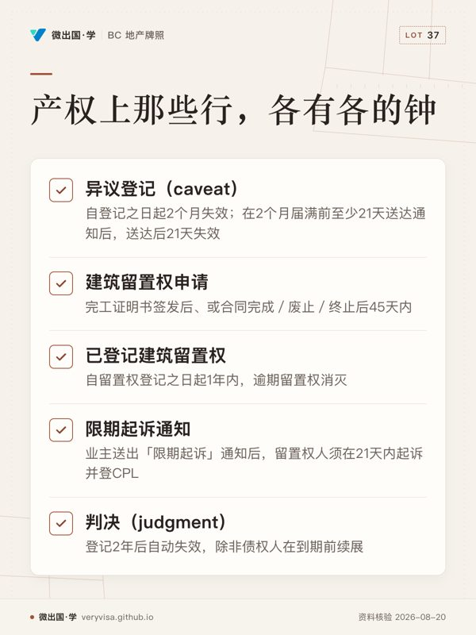

🃏 Flashcards · 3 闪卡 · 3 张 🖼 Slides · 2 幻灯 · 2 页 ✍️ Questions · 11 刷题 · 11 道
法律基础与产权 law-foundation P1 必拿分 P1 Must score
ZH EN ZH + EN
先看这一章怎么考 First, how this chapter is tested
情景定性题：给出业主切分地块、出租整栋建筑的一部分或出租土地一部分的案例，考你能否区分什么行为构成《土地产权法》（Land Title Act）第 73 条下的法定分割（subdivision），以及分区（zoning）允许的户数与分割审批之间的界限。 Scenario classification questions: Presenting cases where an owner divides a parcel, leases part of an entire building, or leases a portion of land, testing whether you can distinguish what constitutes a statutory subdivision under section 73 of the Land Title Act, as well as the boundary between permitted zoning density and subdivision approval. 四种分割对比题：把传统平面分割、建筑共管、裸地共管（bare land strata）和空间地块（air space parcel）混在同一题里，重点考内部道路谁来修、空间地块是否默示地役权（easement）以及上下边界外的空间归属。 Four-type subdivision comparison questions: Combining conventional subdivision, building strata, bare land strata, and air space parcels in a single question, focusing on who maintains internal roads, whether air space parcels imply easements, and who owns the space beyond upper and lower boundaries. Torrens 四大支柱与例外辨析题：给你伪造契据、无偿赠与、未登记租约或登记了伪造按揭的连环交易，考不可推翻性（indefeasibility）的十项例外、善意有价对价（valuable consideration）的门槛、押记（charge）不享不可推翻性，以及通知原则（doctrine of notice）被废除后的欺诈认定。 Torrens four pillars and exceptions questions: Presenting forged deeds, voluntary transfers by gift, unregistered leases, or chains of transactions with registered forged mortgages, testing the ten exceptions to indefeasibility, the threshold of bona fide valuable consideration, the lack of indefeasibility for charges, and the definition of fraud following the abolition of the doctrine of notice. 最常丢分的陷阱（看到题干信号就警觉） Traps that cost the most marks (watch for the signal in the stem)
三年与十年租约线混用 Confusing the Three-Year and Ten-Year Lease Thresholds 题干出现 lease、actual occupation、part of a parcel、part of a building 或 transparency declaration 时，先核对是《土地产权法》的三年线还是 LOTA 的十年线。 When the question stem mentions a lease, actual occupation, part of a parcel, part of a building, or a transparency declaration, first verify whether the three-year Land Title Act line or the ten-year LOTA line applies. 把押记当成不可推翻产权 Treating Charges as Indefeasible Titles 题干出现 forged transfer 之后紧跟着 registered mortgage 或 charge，问无辜贷款人能否保住按揭或向保证基金索赔。 The question stem features a forged transfer immediately followed by a registered mortgage or charge, asking whether an innocent lender can uphold the mortgage or claim against the assurance fund. 裸地共管道路当市政路 Treating Bare Land Strata Roads as Municipal Roads 题干出现 bare land strata plan、internal roads、common property 或审批官签名旁的裸地共管注记。 The question stem mentions a bare land strata plan, internal roads, common property, or the statutory bare land strata notation beside the approving officer signature. 本章考点页：导图、要点表、7 道带逐项解析的练习 →
本章地位 ：上一章讲「买家买到的是什么权益」，这一章讲「那份权益是怎么被切出来的、又是怎么被证明的」。
前半是分割 （谁有权把一块地变成两块），后半是登记 （凭什么说这块地是你的）。
核实日期：2026-09-05 ；法条文本核到 BC Laws 自标的 current to 2026-09-01 版，出处见文末源表。
这一章的知识有一个很特别的性质：骨架几乎不过时，接口几乎全过时。
Torrens 制度的四根柱子从 1860 年代立到今天没动过，《土地产权法》(Land Title Act) 关于不可推翻性的那一条现在仍然是十项例外，一项不多一项不少。但你每天真正会碰的那几个接口 ——去哪个网站查产权、交表要交几份、交完谁会拒收你——2020 年之后换了一轮。考试口径定稿那年（2020）BC 还没有《土地所有人透明法》(Land Owner Transparency Act, LOTA) 的强制申报，制造房屋登记还挂在 BC OnLine 上，原住民所有权还只有两条确立路径。
所以这一章的读法是：原理照考试口径读，接口一律按下面重建。
一、谁拥有 BC 的土地 本节回答 This section answers 五类土地权属比例、保留地与现代条约规则及原住民所有权确立路径 Proportions of five land ownership categories, rules for reserve lands and modern treaties, and pathways to establish Aboriginal title
BC 的土地所有权分五类，比例上极其悬殊：省级官地（provincial Crown land）占了绝大部分，联邦官地约百分之一，私有土地只占百分之五左右 ——但在大温这类高密度地区，你经手的几乎全是那百分之五。剩下的是条约土地（treaty settlement land）与原住民所有权（Aboriginal title）覆盖的土地。
三件对交易有直接影响的事：
保留地（reserve）不适用《土地产权法》。 保留地属联邦官地，一般不做分割，登记在联邦的登记簿里（Indian Land Registry System、First Nations Land Registry System，另有少数自治协议下的登记系统）。这些系统不是 Torrens 制度 ，没有不可推翻性、没有标准表格，多数交易还需要部长或议会同意，时间线完全不同。已生效条约下的土地是 fee simple。 生效条约的原住民族以完全所有权持有其条约土地，并对其拥有广泛治理权。BC 现有四份已实施的现代条约（Nisga'a、Tsawwassen、Maa-nulth、Tla'amin）。其中 Tsawwassen 的土地进了省的产权登记簿，只是产权上带特别注记；Nisga'a 自建了一套基于 Torrens 原理的登记系统；Maa-nulth 内部各族做法不一。第五份条约在路上，但还没生效。 K'ómoks 条约 2025 年 3 月 8 日经族内表决通过（条约 81% 赞成、自治宪法 83% 赞成）；省政府 2026 年 4 月 14 日把《K'ómoks Treaty Act, 2026》提交立法会，作为省方批准的第一步。生效日由三方商定后另行公布，官方尚未给出。 2026 年的正确说法仍然是「四份已生效」 ，但客户如果在 Comox Valley 一带看地，这条时间线值得知道。
原住民所有权：2024 年多出了第三条确立路径
考试口径（©2020）讲原住民所有权时，给的确立方式是两条：法院宣告 （里程碑是 2014 年最高法院对 Tsilhqot'in Nation 的判决），或与官方达成协议 。
2024 年出现了第三条：省级立法直接确认 。BC 省修订《Haida Nation Recognition Act》，新增第 4.1 条，明文承认海达族对 Haida Gwaii 全境享有《宪法法案 1982》第 35 条意义上的原住民所有权，2024 年 7 月 5 日生效。这是加拿大第一次由立法机关而非法院来确认原住民所有权。
对持牌人来说，客户会立刻问一句：「那我在 Haida Gwaii 的房子还是我的吗？」答案写在同一部法的第 4.3 条 ：无论在该条生效之前还是之后产生的，完全所有权（estate in fee simple），以及从完全所有权派生、附着于它或与之相关的权益，一律确认并延续。 第 4.4(4) 条另把其他既存权益一并延续下来。
⚠️
「承认原住民所有权」不等于「私产被收回」
这一条 2024 年在中文社群里被传成「BC 把 Haida Gwaii 划给原住民了，私人房产要没了」。
法条文本是相反的：所有权确认与 fee simple 延续写在同一部法里，是一组的。
给客户讲这件事时，把第 4.3 条的存在讲出来比讲一百句「不用担心」有用。
节末检索小测 · 先别往回翻，凭记忆作答 Quick recall check: answer from memory before scrolling back
A licensee is preparing a listing presentation for a client interested in properties across British Columbia. According to the course manual, which of the following statements accurately compares reserve lands and modern treaty settlement lands?
一名持牌人正在为有意在 BC 省置业的客户准备上市说明。根据课程考试资料，下列哪项准确对比了保留地与现代条约土地？
a Both reserve lands and treaty settlement lands are registered exclusively in the provincial Torrens system and enjoy indefeasible title. ✗ 错误。保留地（reserve）属联邦官地，登记在联邦登记系统（如 Indian Land Registry System 或 First Nations Land Registry System），不属于 Torrens 制度，也没有不可推翻产权证（indefeasible title）。 Incorrect. Reserve lands are federal Crown lands registered in federal registries (such as the Indian Land Registry System or First Nations Land Registry System), outside the Torrens system, and do not carry an indefeasible title.
b Reserve lands are federal Crown lands outside the Land Title Act, whereas First Nations under implemented modern treaties hold their treaty settlement lands in fee simple. ✓ 正确。保留地属联邦官地，不适用《土地产权法》（Land Title Act），其登记系统不是 Torrens 制度；而已生效现代条约（treaty settlement land）下的原住民族则以完全所有权（fee simple）持有其条约土地。 Correct. Reserve lands are federal Crown lands outside the Land Title Act and are not registered in the provincial Torrens system; conversely, First Nations under implemented modern treaties hold their treaty settlement lands in fee simple.
c Aboriginal title according to the course manual can only be established by provincial statute, which automatically extinguishes private fee simple estates. ✗ 错误。考试口径（©2020）下原住民所有权（Aboriginal title）由法院宣告或与官方达成协议两条路径确立；2024 年虽新增省级立法确认（如《Haida Nation Recognition Act》），但该法第 4.3 条明文确认并延续完全所有权（estate in fee simple），绝非消灭私产。 Incorrect. Under the exam syllabus (course manual), Aboriginal title is established via court declaration or negotiated agreement with the Crown; although provincial statutory recognition was added in 2024 through the Haida Nation Recognition Act, section 4.3 explicitly confirms and continues private fee simple estates rather than extinguishing them.
d Private fee simple land accounts for the vast majority of British Columbia's land base, while provincial Crown land accounts for about five percent. ✗ 错误。把比例说反了：省级官地（provincial Crown land）占了绝大部分，联邦官地约占百分之一，而私有土地（private fee simple land）只占百分之五左右。 Incorrect. Inverts the proportions: provincial Crown land accounts for the vast majority, federal Crown land accounts for about 1%, and private fee simple land accounts for only about 5% of British Columbia's land base.
看答案与每个选项的解析 Show the answer and why each option is right or wrong 答案 Answer ：b
二、分割：普通法上的那个权利已经被取消了 本节回答 This section answers 第73条分割禁令、三年租约线、建筑例外与审批官三个时限 Section 73 subdivision prohibition, the three-year lease threshold, the building exception, and three approving officer timelines 本章考题 1 Question 1
普通法下，完全所有权人天然有权把自己的地切开，不需要任何人批准。这条权利在 BC 已被成文法取消。
图：三年在这一章出现三次——含义各不相同。图中第 73 条那一格指的是把土地的一部分出租超过三年；出租建筑物或其中一部分不算分割（s.73(3)）
《土地产权法》第 73 条的写法是禁止式的：除非依该法第 7 部办理，任何人不得 为了转让、或为了签订超过三年（含终身） 的租约而把土地分成比自己所有的更小的地块。第 73(3) 条给了一个重要例外：为出租建筑物或建筑物的一部分 而做的划分，不算分割——这就是为什么一栋楼可以租给二十个租户而不必先分割。
ℹ️
「三年」在这一章会出现三次，含义各不相同
① 第 73 条：为出租一块地的一部分 而签超过三年的租约，要当分割办（出租建筑物或其中一部分不算）；
② 第 20(3) 条：不超过三年且实际占用 的租约，不登记也有效；
③ 第 23(2)(d) 条：同样条件的租约是不可推翻性的十项例外之一。
三条互相咬合，是同一个立法判断的三个侧面：短租约不进登记簿，但也不因此失效。
后面第七节还会出现另一条租约年限线——那是另一部法（LOTA）的十年 线，别混。
审批官（approving officer）与他手上的时钟
现代分割必须经审批。审批官由市政府、区域局、Islands Trust、省政府、条约原住民族政府或 Nisga'a 政府按各自条款任命（第 77 至 77.3 条）。核心权力在第 85(3) 条：审批官若认为该分割图的存放违反公共利益 ，可以拒绝。第 86 条进一步列了可以拒绝的具体理由——道路通行与路权宽度不合规、道路未按其要求清理排水铺筑、预期开发会损害相邻地块既有的宜居条件 ，等等。
时限有三个，柜台上会真的撞到：
登记官不得 存放未经审批官批准的分割图（第 91(1) 条）——这就是审批与登记之间的那道闸。
分割图一经存放，图上标为道路、公园或公共广场的部分立即且终局地献给公众 ，其权属依第 107 条转出（法条文本写的是归省 Crown，并「受其他法规约束」——具体到某块地上市政道路归谁，还要看相关市政法）。对卖方的意义很直白：那部分地已经不再是他的资产了 ，估价与谈判都要按分割后的净可售面积走。
✕
分区（zoning）不是分割（subdivision），别把 2023 年那轮改革安到这一章上
2023 至 2024 年省里推的小型多户住宅上分区（SSMUH）与交通导向区密度改革，
改的是地方政府能不能限制你在一块地上盖几户 ，走的是《地方政府法》那条线（另章展开）。
它没有取消第 73 条，也没有取消审批官。
「我这块地现在可以盖四户了，所以可以直接分成四块卖」——这句话是错的，
允许的户数与允许的地块数是两回事。这是本章最容易被客户带着走偏的一处。
节末检索小测 · 先别往回翻，凭记忆作答 Quick recall check: answer from memory before scrolling back
An owner submits a subdivision plan to the municipal approving officer, who refuses it on the ground that depositing the plan would be contrary to the public interest. What is the statutory deadline for the owner to appeal to the Supreme Court?
业主向市政审批官提交了一份分割图。如果审批官以存放该分割图违反公共利益为由拒绝批准，业主向高等法院提出上诉的法定时限是多久？
a Within 1 month after the refusal, though the court may extend this time for a further period not exceeding 1 month. ✓ 正确。依《土地产权法》（Land Title Act）第 89(1)(2) 条，被审批官（approving officer）驳回或逾期未批后，申请人须在 1 个月内向省高等法院提出上诉，法院可再延长最多 1 个月。 Correct. Under sections 89(1) and 89(2) of the Land Title Act, upon refusal or failure of the approving officer to approve within the statutory deadline, the applicant must appeal to the Supreme Court within 1 month, which the court may extend by up to 1 additional month.
b Within 2 months after the initial submission, with no statutory power for the court to grant an extension. ✗ 错误。混淆了时限：2 个月是审批官作出批或驳的时限（第 85(1) 条），以及获批后将分割图交登记处存放的时限（第 92(1)(c) 条），而不是上诉时限。 Incorrect. Confuses statutory timelines: 2 months is the period for the approving officer to approve or refuse a plan (section 85(1)) and for tendering an approved plan for deposit at the land title office (section 92(1)(c)), not the deadline to appeal.
c Within 21 days after receiving written notice of the refusal from the land title registrar. ✗ 错误。21 天是异议登记（caveat）收到通知后失效或建筑留置权收到限期起诉通知的时限，且驳回分割图的是审批官而非登记官。 Incorrect. Twenty-one days is the accelerated lapse period for a caveat after notice or for commencing an action on a builders lien after notice, and subdivision plans are refused by the approving officer rather than the registrar.
d Within 3 years from the date the owner discovers that the subdivision application was rejected. ✗ 错误。三年是向保证基金（assurance fund）求偿或短租约免登记的年限，与分割审批上诉无关。 Incorrect. Three years is the limitation period for assurance fund claims or the short-term lease threshold, which has no application to subdivision approval appeals.
看答案与每个选项的解析 Show the answer and why each option is right or wrong 答案 Answer ：a
三、三种切法：平面、共管、空间 本节回答 This section answers 传统分割、裸地共管与空间地块在道路维护、边界及地役权上的区别 Differences among conventional subdivisions, bare land strata, and air space parcels regarding road maintenance, boundaries, and easements 本章考题 2 Question 2
登记在产权登记簿上的土地，有三种切法：
① 传统平面分割。 一块变两块，或者两块重划成三块。新地块各自拿到独立的不可推翻产权证。道路献给公众后由公共一方维护。
② 共管（strata）分割。 把建筑物 或土地 切成可单独持有的部分，加上共有财产。切建筑物的图叫共管图（strata plan），切土地的叫裸地共管图 （bare land strata plan）——法规要求后者必须在审批官签名旁明写自己是裸地共管图，这是最快分辨两者的办法。
裸地共管长得极像传统分割，义务却完全不同：
这一条差别是裸地共管交易里最常见的信息缺口 ：买家看到的是一条普通的社区道路，实际上路面塌了是他和邻居们出钱。
③ 空间（air space parcel）分割。 《土地产权法》第 9 部把空气本身定义为土地（第 139 条：air space constitutes land and lies in grant），完全所有权人可以存放一份空间图，切出一个或多个体积地块 并各自取得不可推翻产权证（第 141(1) 条）。空间地块可以再按《共管物业法》做共管分割（第 141(3) 条）。典型用法是把一栋楼的商业部分与住宅部分切成两个互不隶属的共管法团，各有各的章程与费用。
⚠️
空间分割不自带地役权，上下两头也不自动归你
第 140(1) 条：授予一个空间地块，不转让任何地役权 ，也不默示任何限制性约定。
第 140(2) 条：除非明文授予，空间地块上界之上、下界之下的空间仍归出让人所有。
所以这类楼的产权证上会挂一长串关于支撑、电梯、上下水与共用设施的地役权与协议——
那不是杂讯，那是这套结构能运转的全部理由。买家的律师必须逐条看。
共管这一侧的其余细节（单位权益表、章程、法团治理、期满处理）在共管专章展开。这里只留一条对交易最关键的：租赁式共管（leasehold strata） 里买家买到的不是完全所有权，而是一份地块租约下的承租人权益，剩余年期逐年缩短；期满时按《共管物业法》三选一——出租人依第 214 条买回、续约、或依第 216 条把完全所有权转给全体承租人（转就必须全转）。产权证上若挂着限制表（Schedule of Restrictions） ，对法团和每一个后手买家都有约束力。
节末检索小测 · 先别往回翻，凭记忆作答 Quick recall check: answer from memory before scrolling back
A developer holds fee simple title to a downtown parcel and files an air space plan to create an upper air space parcel for a residential tower above a commercial podium. Under Part 9 of the Land Title Act, which rule governs the grant of that air space parcel?
某开发商持有一块市中心地块的完全所有权，并存放了一份空间图，在商业裙楼上方切出一个上层空间地块用于建住宅塔楼。根据《土地产权法》第 9 部，哪项规则适用于该空间地块的授予？
a The grant automatically implies easements of structural support, elevator access, and utility connections through the lower podium. ✗ 错误。正好踩中空间地块陷阱：依《土地产权法》第 140(1) 条，授予空间地块（air space parcel）不转让任何地役权（easement），也不默示任何限制性约定，支撑与通行必须靠明文协议登记。 Incorrect. Falls into the air space parcel trap: under section 140(1) of the Land Title Act, a grant of an air space parcel does not transfer any easements or imply any restrictive covenants; rights of support and access must be expressly negotiated and registered.
b An air space parcel cannot be further subdivided under the Strata Property Act once an indefeasible title is issued for it. ✗ 错误。依第 141(3) 条，空间地块取得不可推翻产权证后，完全可以再按《共管物业法》（Strata Property Act）做共管分割。 Incorrect. Under section 141(3), once an air space parcel receives an indefeasible title, it may be further subdivided into strata lots under the Strata Property Act.
c No easement passes and no restrictive covenant is implied, and the space above and below the parcel stays with the grantor unless expressly granted. ✓ 正确。依第 140(1) 及 140(2) 条，授予空间地块不转让任何地役权也不默示限制性约定，且除非明文授予，空间地块上界之上、下界之下的空间仍归出让人（grantor）所有。 Correct. Under sections 140(1) and 140(2), a grant of an air space parcel transfers no easements or implied covenants, and unless expressly granted, the air space above the upper boundary and below the lower boundary remains the property of the grantor.
d Air space is treated as a personal licence rather than land, so it cannot receive its own separate indefeasible title. ✗ 错误。第 139 条明文规定空气本身构成土地（air space constitutes land and lies in grant），第 141(1) 条允许切出一个或多个体积地块并各自取得不可推翻产权证。 Incorrect. Section 139 explicitly provides that air space constitutes land and lies in grant, and section 141(1) allows one or more volumetric parcels to be subdivided and granted separate indefeasible titles.
看答案与每个选项的解析 Show the answer and why each option is right or wrong 答案 Answer ：c
四、Torrens 制度：它到底解决了什么问题 本节回答 This section answers 不可推翻性十项例外、不登记不生效、废除通知原则与保证基金限制 Ten exceptions to indefeasibility, the unregistered interests rule, abolition of the doctrine of notice, and assurance fund limits 本章考题 3 Question 3
要理解登记制度，先要理解没有它的时候有多糟。
普通法下没有登记，证明所有权靠把几十年来所有的契据摆出来 ，一份不缺、一份不废，这叫建立产权链条。链条上任何一环是无效契据 （void deed，最典型的是伪造），从那一环往后全部无效 ——不管后面的人多无辜、付了多少钱。这条规则的拉丁名是 nemo dat quod non habet：没有的东西给不出去。
后来有的司法辖区搞了契据备案制度，把契据集中存档。这只解决了「文件会丢」，没解决「文件是假的」——假契据备案之后仍然是假的 。真正的买家还是随时可能被真正的所有人追回土地。
Torrens 制度换了一个思路：登记的不是文件，是产权本身。 登记簿上写谁是完全所有权人，谁就是；买家不必回溯历史，只需要看今天这一页。BC 自 1860 年代起采用这套制度，载体是《土地产权法》。
它靠四根柱子支撑：
柱子一：不可推翻性（第 23 条）
不可推翻产权证只要仍然有效未被注销，就是法律上与衡平法上对世的终局证据 ，证明证上载明的人对该地享有完全所有权。但要减去十项例外 ——第 23(2) 条的 (a) 到 (j)，2026 年仍然是十项：
例外 (i) 是整条的枢纽：自己参与欺诈的人不受保护 ，真正的所有人可以从他手上把地要回来。但只要他把地卖给了一个善意付了合理对价的买家，那个买家就受保护了——第 25.1(2) 条：即便转让完全所有权的文书本身无效，只要受让人善意且支付了有价对价 ，登记之时视为已取得该权益。
✕
「有价对价」不是给一块钱就算
判断标准是按当时市场价看合理的价格 。以赠与方式取得的、或者象征性一元取得的，
都不能靠第 25.1 条保住产权。这一格在考场上是送分题，在柜台上是家庭内部过户的真问题：
亲属之间以远低于市价过户，一旦上游有瑕疵，受让人的地位比正常买家弱得多。
柱子二：不登记不生效（第 20 条）
第 20(1) 条：除对作出该文书的人之外，任何意图转让、押记、处置或影响土地权益的文书，未依法登记即不发生转移权益的效力 ，无论普通法上还是衡平法上。
反过来读这句话同样重要：未登记的转让在当事人之间仍然有效。 A 把地卖给 B，B 没登记，B 仍然可以对 A 主张；但对世界上其他人，B 什么都主张不了。第 20(3) 条把不超过三年且实际占用的租约排除在外。
结论对代理人是可操作的：看到有人占着房子而产权上查不到他的名字，不要下「那是无权占用」的结论 ——很可能就是一份合法有效的短租约。
柱子三：通知原则被废除（第 29 条）
普通法下，只要合理查看与询问就能发现的权益，你都被推定知道 ，因而受其约束——哪怕卖方从没告诉过你。这叫通知原则（doctrine of notice）。它和 Torrens 的目标直接冲突，所以被第 29 条废掉了：与注册所有人打交道的人，不受任何明示、默示或推定的未登记权益通知的影响 ，除了三项（正在办理登记的权益、不超过三年且实际占用的租约、以及依第 23(4) 条无效的首次产权）。
唯一的例外是本人参与了欺诈 。那么，「知道有未登记的权益却照样登记」算不算欺诈？BC 法院的口径是：单纯知道不算 ，要知道加上不诚实的行为才算；而判断诚信与否的关键时点是合同订立之时 。签约之后才知道，通常不影响你的产权。
柱子四：保证基金（第 19.1 部）
不可推翻性保住了无辜买家，代价是原所有人失去了土地。补偿他的是保证基金。2005 年 1 月 20 日之后的交易由土地产权与测量局（LTSA）维持的基金承担（第 19.1 部），此前的由政府基金承担（第 20 部）。
考试口径没有讲、但会决定拿不拿得到钱的三条：
三年时效。 依第 294.2(7) 条，因欺诈或不当行为被剥夺土地的求偿，须在申请人发现被剥夺之日起三年内 提起；因登记官失误求偿的，第 294.22(3) 条同样是三年，且明文优先于《时效法》。赔偿封顶。 第 294.61 条：赔偿额不得高于损失发生当时 该土地的价值，且不计入损失之后建造或做出的建筑与改良 。这一条在涨价周期里很扎眼——十年前被骗走的地，赔的是十年前的价。一大串不赔的情形。 第 294.6 条 (a) 到 (h)。最常被引用的是 (f)：因申请人自己的作为、疏忽或过失所致或所助长的那部分损失，一概不赔。 另一条 (d) 也要记住：因登记处存放的图上地块面积或空间地块体积的错误或短缺造成的损失，不赔 ——换句话说，登记处保证的是「谁拥有」，不保证「有多大」。
⚠️
押记（charge）不享有不可推翻性——这是 BC 与部分其他 Torrens 辖区的关键差别
第 26(1) 条只说押记的注册所有人「被视为」享有该文书所设定的权益；第 26(2) 条把话说死了：
押记的登记，不构成登记官对该文书是否创设权益、或该押记是否可强制执行的认定。
也就是说完全所有权的登记是「保证」，押记的登记只是「可反驳的推定」。
BC 上诉法院在 Gill v. Bucholtz（2009 年）里确认了这一点：伪造转让之后设立的按揭，
即使按揭权人完全无辜并已登记，产权恢复给原所有人时按揭一并被涂销，且不能向保证基金索赔 ——
因为普通法上他本来就什么都没拿到，不是《土地产权法》让他失去了权益。
这一条同时解释了为什么 BC 明明是 Torrens 辖区，产权保险却仍然普及：
不可推翻性只覆盖完全所有权，覆盖不到押记，也覆盖不到通行、分区与实际边界。
节末检索小测 · 先别往回翻，凭记忆作答 Quick recall check: answer from memory before scrolling back
Before entering into a contract of purchase and sale, a buyer learns that a neighbour claims an unregistered ten-year lease over a workshop on the seller's land. The buyer signs the contract without acting dishonestly and registers the fee simple transfer. Under section 29 of the Land Title Act, is the buyer bound by the unregistered ten-year lease?
在签订买卖合同前，买家得知邻居声称对卖方土地上的一间工坊享有一份未登记的十年期租约。买家在没有任何不诚实行为的情况下签约并办理了完全所有权转让登记。根据《土地产权法》第 29 条，买家是否受该未登记十年期租约的约束？
a Yes, because under the common law doctrine of notice, any prior actual knowledge of an unregistered interest binds a subsequent purchaser. ✗ 错误。普通法上的通知原则（doctrine of notice）已被《土地产权法》第 29 条废除，与注册所有人交易的人不受未登记权益通知的影响。 Incorrect. The common law doctrine of notice has been abolished by section 29 of the Land Title Act, so a person dealing with a registered owner is not affected by notice of an unregistered interest.
b Yes, because all leases regardless of length are statutory exceptions to indefeasibility under section 23(2)(d). ✗ 错误。第 23(2)(d) 条和第 29 条保护的短租约例外仅限于「不超过三年且有实际占用（actual occupation）」的租约，十年期租约不在豁免之列。 Incorrect. The short-term lease exception protected under sections 23(2)(d) and 29 is strictly limited to leases not exceeding three years where there is actual occupation; a ten-year lease does not qualify for this statutory exemption.
c No, unless the neighbour registered a transparency report under the Land Owner Transparency Act prior to completion. ✗ 错误。依第 29(5)(6) 条，LOTR 的申报不构成《土地产权法》意义上的通知，也不能代替产权登记。 Incorrect. Under sections 29(5) and 29(6), filings under LOTR do not constitute notice under the Land Title Act and cannot substitute for land title registration.
d No, section 29 removed the doctrine of notice, and knowing of the lease without dishonesty when contracting is not fraud. ✓ 正确。第 29 条废除了通知原则，超过三年的未登记租约不在保护例外内；BC 法院确立「单纯知道（mere knowledge）不算欺诈」，须在合同订立之时兼具知道与不诚实行为才构成欺诈。 Correct. Under section 29(1) of the Land Title Act, except in the case of fraud, a person dealing with a registered owner is not affected by express or implied notice of an unregistered interest; mere knowledge does not constitute fraud under the Torrens system, and a lease exceeding three years is not a section 23(2)(d) exception to indefeasibility, so the buyer is not bound by the unregistered ten-year lease.
看答案与每个选项的解析 Show the answer and why each option is right or wrong 答案 Answer ：d
五、产权上那些行，各有各的钟 本节回答 This section answers 重复产权证、异议登记、CPL、留置权、判决及219条约定 Duplicate indefeasible titles, caveats, CPLs, builders liens, judgments, and section 219 covenants 本章考题 4 Question 4
产权证顶上是完全所有权人，底下一串是押记 （charge，一切小于完全所有权的权益）。以下这些常见项各带一个时限，问错一个就可能误判交易能不能按时交割。
重复产权证（duplicate indefeasible title）。 1979 年起不再自动发放，只应注册所有人书面申请签发。只要重复证被取出而没交回，登记处就不办转让、按揭或长期租约的登记。 所以查产权时要看「Duplicate Indefeasible Title」那一栏是不是 None Outstanding；写着有一份在外面，就要当天查清在谁手上。丢失的可依第 193 条申请补发，但补发要时间——等到收了 offer 才开始找，交割日很可能守不住。
异议登记（caveat）。 声称对该地享有权益的人可以登记一条 caveat，阻止一切与其所主张权益不一致的处分。它自登记之日起 2 个月失效 （第 293(1) 条），除非在此期间提起诉讼并登记待决诉讼证明书。被登记人（caveatee）还可以按第 293(2) 条主动送出通知加速：在 2 个月届满前至少 21 天送达通知后，caveat 在送达后 21 天 失效。若 caveat 是无理由、无合理根据登记的，登记人须依第 294 条赔偿受损方。
待决诉讼证明书（CPL）。 告诉所有查产权的人：这块地正在打官司。它不再像过去那样冻结一切登记——今天，产权或押记的登记可以在 CPL 存在的情况下推进，但必须明示该登记从属于诉讼的最终结果、或申请人书面选择在从属于 CPL 的前提下登记。滥用 CPL 会被判赔。
建筑留置权（builders lien）。 时限一整套，来自《建筑留置权法》：
买新房或翻新房的买家有一条专属规则：从开发商手上买共管单位的买家，须扣留总购价的 7% （《共管物业法》第 88(2) 条授权，比例由《共管物业法规》第 5.2 条定为 7%），扣到留置权申请期届满或交割后 55 天中较早者。注意这里是 7% 不是 10%，且计算基数是总购价 ——两个数都不能凭印象写进合同。
🔧
保留权必须写进合同，法律不会自动给你
买家在成交后仍可能被后来提交的留置权打到。但《建筑留置权法》并不授权买家单方面从合同价里扣钱 ——
要能扣，合同里必须先创设这项权利。所以拿到新建或大翻新的房子，条款要在写 offer 时就放进去，
而不是交割前才想起来。
判决（judgment）。 判决可以像押记一样登记在债务人的土地权益上。登记 2 年后自动失效 ，除非债权人在到期前续展（《法院命令执行法》第 83(1) 条）。查到一条判决，第一动作是问卖方打算怎么在成交时清偿，并建议他找律师——而不是自己算它还有几个月。
第 219 条约定（section 219 covenant）。 省政府或地方政府可以要求业主在产权上登记一条限制土地用途的约定。它与普通法上的限制性约定有一个根本差别：第 219 条约定可以是积极的，也可以是消极的 ——它可以要求你做某件事，不只是禁止你做某件事。常见于污染地块与地方政府对分割及可建内容的控制。
特殊废物通知（第 392 条）、遗产建筑指定、以及《社区宪章》第 57 条通知 ：三者都出现在产权证的「法律注记（Legal Notations）」栏。第 57 条通知的含义最重——它是市政议会在多次劝导无效后的最后手段，表示该物业因不符合市政章程或省建筑法规而可能不适宜居住 ；近年常被用来标记曾经有过非法种植或制毒的房子。看到它，正确动作是联系市政部门问清成因，并让管理经纪或律师介入。
节末检索小测 · 先别往回翻，凭记忆作答 Quick recall check: answer from memory before scrolling back
A seller urgently needs to clear a caveat registered against her title so a pending sale can complete. Instead of waiting for the normal lapse period, she serves a formal notice on the caveator under section 293(2) of the Land Title Act at least 21 days before the normal expiry. When will the caveat lapse if the caveator takes no court action?
卖方急需清除登记在她产权上的一条异议登记（caveat）以便完成交易。她没有干等正常失效期，而是依《土地产权法》第 293(2) 条在正常届满前至少 21 天向异议登记人送达了正式通知。如果异议登记人不采取诉讼行动，该异议登记何时失效？
a At the end of 21 days after the date the notice is served on the caveator. ✓ 正确。异议登记（caveat）正常自登记之日起 2 个月失效（第 293(1) 条），但被登记人依第 293(2) 条在 2 个月届满前至少 21 天主动送达通知后，若对方不起诉并登 CPL，caveat 在送达后 21 天即失效。 Correct. A caveat normally lapses 2 months after registration (section 293(1)), but if the owner serves formal notice under section 293(2) at least 21 days before the two-month expiry and the caveator fails to commence an action and register a CPL, the caveat lapses 21 days after service.
b At the end of 45 days after the notice is filed with the land title office. ✗ 错误。45 天是《建筑留置权法》（Builders Lien Act）下提交留置权申请的时限，不是异议登记加速失效的时限。 Incorrect. Forty-five days is the time limit for filing a claim of lien under the Builders Lien Act, not an accelerated lapse period for a caveat.
c At the end of 2 years from the date the caveat was originally registered. ✗ 错误。2 年是判决（judgment）登记自动失效的时限（《法院命令执行法》第 83(1) 条），不是 caveat 的时限。 Incorrect. Two years is the statutory lapse period for a registered judgment under section 83(1) of the Court Order Enforcement Act, not the timeline for a caveat.
d At the end of 3 months, which is the fixed statutory duration for both caveats and cautions. ✗ 错误。3 个月是《制造房屋法》下诉讼警示（caution）的失效期，产权登记处的 caveat 正常是 2 个月，送通知加速是 21 天。 Incorrect. Three months is the expiration period for a caution under the Manufactured Home Act; a land title caveat normally lapses in 2 months, or in 21 days if accelerated by statutory notice.
看答案与每个选项的解析 Show the answer and why each option is right or wrong 答案 Answer ：a
六、柜台上怎么查产权 本节回答 This section answers 九位PID终身绑定规则、七个登记区三个办公室与合同产权条款 Nine-digit permanent PID rules, seven land title districts across three offices, and contract title clauses
查产权的入口是 PID（Parcel Identifier，地块标识码） 或法定描述（legal description）。PID 是登记官在产权创设时分配的九位数字 ，一旦与某块地绑定就终身不变——除非该地日后被分割或合并，那时会创设新的产权、给新的 PID。拿不到 PID 的时候，可以从 BC Assessment 的估价查询、多数市政的 GIS 地图，或者物业税单顶上找到它。
查询通过 LTSA 的在线账户（myLTSA / LTSA account）进行，也可以预约到设在 New Westminster、Kamloops、Victoria 的三个产权登记处柜台。全省名义上仍是七个产权登记区 （Kamloops、Nelson、New Westminster、Prince George、Prince Rupert、Victoria、Vancouver），行政上由那三个办公室分管，各有一位登记官。
现行收费快照（2026 年 4 月 1 日 LTSA 收费表）
这七个数字每年 4 月 1 日左右会动，写进任何对客户的材料时都要带上「2026 年 4 月 1 日快照」这个限定，或者当场回官方收费页取现价。
✕
不查产权就上市，是纪律处分的常见形态
上市前不查产权，你不知道来找你的人是不是所有人、是不是唯一所有人、是不是遗嘱执行人、
房子在不在止赎程序里、产权上有没有会让卖方违反交付义务的押记。
更要命的是查了一半 ：拿到卖方给的产权查询件而不自己出一份完整的，
少掉的那一页可能正好写着限制建造的几条押记，而买家买地就是为了建房。
这一类形态在 BC 出过纪律案例，处分包括停牌、自费重修课程与承担调查费用。
标准买卖合同里的产权条款要求卖方交付的产权是「无任何负担的，但既存的条件、附带条款、限制、除外与保留除外，包括原始或其后官方授予中的权利金，已登记或待登记的限制性约定与给公用事业和公共部门的路权，以及第 5 条列明的既存租约除外」。这句话的实际含义是：产权上如果挂着一条到交割日不会被涂销、又不属于上述豁免的押记（比如一条地役权），买家有权主张卖方违反了根本条款并终止合同。 遇到这种情况，正确动作是提前修改该条款、或用附加条款让买家书面认可产权现状，而不是等到交割日再说。
节末检索小测 · 先别往回翻，凭记忆作答 Quick recall check: answer from memory before scrolling back
When conducting a title search in British Columbia, a licensee uses the property's Parcel Identifier (PID). Which statement correctly describes the nature of a PID and the organization of the land title registry?
在 BC 省进行产权查询时，持牌人使用了物业的地块标识码（PID）。下列哪项正确描述了 PID 的性质以及产权登记处的组织架构？
a A PID is a seven-digit number that changes every time fee simple ownership is transferred to a new buyer. ✗ 错误。地块标识码（Parcel Identifier, PID）是九位数字，且一旦与某块地绑定就终身不变，普通买卖过户不会改变 PID。 Incorrect. A Parcel Identifier (PID) is a nine-digit number permanently assigned to a parcel; standard conveyances do not alter the PID.
b A nine-digit number fixed for the parcel's life unless it is subdivided or consolidated, within seven land title districts run from three offices. ✓ 正确。PID 是登记官分配的九位数字，终身不变，除非该地日后被分割（subdivided）或合并（consolidated）；全省分为七个产权登记区（land title districts），由设在 New Westminster、Kamloops 和 Victoria 的三个办公室分管。 Correct. A PID is a permanent nine-digit number assigned by the registrar that remains attached to the land unless subdivided or consolidated; the province is divided into seven land title districts administered by three offices located in New Westminster, Kamloops, and Victoria.
c Standard contracts of purchase and sale allow a seller to leave any registered private easement on title at completion without disclosing it to the buyer. ✗ 错误。标准买卖合同只豁免给公用事业和公共部门的路权及限制性约定等特定项目；若挂着一条未豁免且交割日不涂销的私人地役权（easement），买家有权主张卖方违反根本条款并终止合同。 Incorrect. The standard contract of purchase and sale exempts only specific items like public utility rights-of-way and restrictive covenants; an unexempted private easement that is not discharged on completion entitles the buyer to treat the contract as ended for breach of an essential term.
d Relying on a partial title search print-out supplied by the seller satisfies a listing licensee's professional duty. ✗ 错误。不查产权或只看卖方给的半份产权查询件而不自己出完整查册，漏看限制建造的押记，属于典型的纪律处分形态。 Incorrect. Failing to conduct an independent title search or relying on partial searches provided by the seller, thereby missing charges that restrict building, is a classic basis for regulatory discipline.
看答案与每个选项的解析 Show the answer and why each option is right or wrong 答案 Answer ：b
七、《土地所有人透明法》：考试口径整块缺失的一部法 本节回答 This section answers 透明申报表必交规则、三类申报主体、10%与十年线及两层罚则 Mandatory transparency declaration rules, three categories of reporting bodies, 10% and ten-year thresholds, and two tiers of penalties
这是本章最大的缺口。考试口径写作时这套制度还不存在，而现在它挡在每一笔登记前面。
自 2020 年 11 月 30 日 起，《土地所有人透明法》(LOTA) 要求：向产权登记处提出登记土地权益的申请 时，每一位受让人（transferee）都必须向 LOTA 管理机构提交一份透明申报表（transparency declaration） ，声明自己是不是「申报主体（reporting body）」（第 10(1) 条）。这不是只有公司才要做的事——个人也要交，交的内容是「我不是申报主体」 。
执法点极硬：第 11(1) 条规定，受让人未随申请提交透明申报表的，登记官必须拒绝受理该登记申请 。电子提交的没按规定签署、纸面提交的表面上看不出已按第 25 条认证的，同样必须拒收（第 11(2) 条）。
如果受让人是申报主体，还要另交一份透明报告（transparency report） ，披露其背后的权益持有人（interest holder） 。三类申报主体：
相关公司（relevant corporation） ——公司或有限责任公司，Schedule 1 列举的除外；相关信托的受托人 ——包括明示信托与光板信托（bare trust） ；相关合伙的合伙人 ——普通合伙、有限合伙、有限责任合伙、专业合伙与外国合伙。
两个数字最容易记错：
⚠️
LOTA 的两条线是 10% 和 10 年，不是 25% 和 3 年
① 公司权益持有人门槛是 10%。 依第 3 条，个人持有相关公司已发行股份的 10% 或以上 ，
或持有可在股东大会上行使 10% 或以上表决权 的股份，即构成公司权益持有人。
很多人把它记成 25%，那是另一套制度的门槛。
② LOTA 意义上的「土地权益」以 10 年为界。 第 1 条定义四类：完全所有权、终身地产权、
期限超过 10 年的租约 、以及分期付款买卖合约（agreement for sale）下占有土地或要求转让完全所有权的权利。
前面第二、三节反复出现的「三年线」是《土地产权法》的线，与这条完全无关。
一份八年租约在 LTA 下要登记、在 LOTA 下不触发申报；一份十二年租约两边都触发。
几个必须记住的日期：
变更之后还要跟着报。 依第 16(1) 条，申报主体知道或理应知道其已交报告不再反映现时权益持有人（或某位权益持有人被认定丧失行为能力）之后，须在 2 个月内 另交一份新的透明报告。这条在实务里最常被漏：公司股权变了、信托受益人变了，土地一动没动，申报义务照样触发。
罚则分两层，数字不一样：
「评估价」指依《评估法》确定的最近一次评估值。对大温一套两百万的房子来说，15% 是三十万——罚则的实际上限由房价决定，而不是由那两个整数决定。 这是给客户讲这条时最有说服力的一句话。
ℹ️
查了 LOTR 不等于查了产权，反过来也一样
这不是经验之谈，是写在法条里的。《土地产权法》第 29(5) 条：与注册所有人打交道的人，
不受任何已提交的透明申报表、透明报告、已申报信息或公开可检索信息的影响 ，
无论他是否知情。第 29(6) 条进一步说：知道有这些申报、或本可通过 LOTA 授权的检索得知，
都不构成第 29(2) 条意义上的欺诈或恶意证据。
立法者的用意很清楚：LOTR 是反洗钱工具，不是产权簿的第二页 。
两套簿子各查各的，谁也不能替谁。
行政上还有一条 2026 年的变化值得记：LTSA 已把原独立的 LOTR 网站内容并入其主站与帮助站（2026 年 3 月 30 日起），旧网址会重定向。中文攻略里指向旧域名的链接开始失效，但制度本身没有任何改变 。
节末检索小测 · 先别往回翻，凭记忆作答 Quick recall check: answer from memory before scrolling back
An individual buyer with no trust or corporate involvement applies to register a fee simple transfer in British Columbia. Under the Land Owner Transparency Act (LOTA), what is this individual transferee required to submit with the application to register?
一名不涉及任何信托或公司的个人买家申请在 BC 省办理完全所有权转让登记。根据《土地所有人透明法》（LOTA），该个人受让人在提交登记申请时必须一并提交什么文件？
a Nothing under LOTA, because the statute applies only to corporations, trustees, and partnerships. ✗ 错误。这是最常见的误区：依 LOTA 第 10(1) 条，每一位申请登记土地权益的受让人（transferee）——包括普通个人——都必须提交透明申报表（transparency declaration），声明自己不是申报主体。 Incorrect. This is the most common misconception: under section 10(1) of LOTA, every transferee applying to register an interest in land—including an individual—must submit a transparency declaration stating whether they are a reporting body.
b Both a transparency declaration and a transparency report disclosing all family members residing at the property. ✗ 错误。透明报告（transparency report）只有三类申报主体（相关公司、相关信托受托人、相关合伙合伙人）才需要提交，不代持的个人只需交透明申报表。 Incorrect. A transparency report is required only if the transferee is a reporting body (relevant corporation, trustee of a relevant trust, or partner of a relevant partnership); an individual acquiring title beneficially submits only a transparency declaration.
c A transparency declaration saying whether it is a reporting body; without it, the registrar must refuse the application. ✓ 正确。依 LOTA 第 10(1) 与 11(1) 条，每位受让人都必须随登记申请提交透明申报表（transparency declaration），个人交的内容是声明自己不是申报主体（reporting body）；未提交的，登记官必须拒绝受理登记申请。 Correct. Under sections 10(1) and 11(1) of LOTA, every transferee must submit a transparency declaration with the application to register, certifying that they are not a reporting body; if omitted, the registrar must refuse to accept the application.
d A corporate interest holder notice only if the individual owns at least 25% of the property's assessed value. ✗ 错误。LOTA 下公司权益持有人（interest holder）的门槛是 10% 股份或表决权而非 25%，且个人直接买房只需交透明申报表。 Incorrect. The corporate interest holder threshold under LOTA is 10% of shares or voting rights rather than 25%, and an individual buying land beneficially only submits a transparency declaration.
看答案与每个选项的解析 Show the answer and why each option is right or wrong 答案 Answer ：c
八、制造房屋：另一套登记簿，另一套规则 本节回答 This section answers 制造房屋与Torrens的四点差异、PPSA担保与30天许可 Four key differences between manufactured homes and the Torrens system, PPSA security interests, and 30-day transport permits 本章考题 5 Question 5
持牌人只有在交易涉及土地权益时才有权销售制造房屋（manufactured home）。但因为这类房屋的所有权、转让与担保都不登记在产权登记处 ，你必须知道另一套系统怎么运作。
《制造房屋法》定义的制造房屋是：为提供居住用途而设计、建造或制造，并可从一地移到另一地的结构——有没有轮子不影响定性 。它建立的是一套中央登记，与 Torrens 有四点根本差别：
对交易最要命的是第 7(7) 条：除对转让当事人之外，制造房屋的转让不生效力，除非房屋本身与该转让都已登记。 这一条的效果和《土地产权法》第 20 条同构。
四个时限与门槛：
移动房屋前必须先登记，并取得运输许可（transport permit） （第 15(1) 条）；运输许可自签发日起 30 天 失效（第 17(1) 条）。未登记的制造房屋不得出售、要约出售或移动 （第 18 条）。对制造房屋主张权益并已提起诉讼的人可以提交警示（caution） ，3 个月 后失效，除非法院在此期间下令注销或延续（第 22(3) 条）。它的作用类似产权登记里的 caveat。
违反移动、许可与销售规定的，罚金上限 $2,000 。
担保权益走《个人财产担保法》(PPSA)：贷款人登记的是融资声明（financing statement） 而不是担保协议本身。制造房屋属「有序列号的物品」，序列号写错可能让整个担保权益失效 ——已登记的房屋，序列号就是它的登记编号。房屋一旦附着于土地成为定着物，担保权人还必须到产权登记处登记其权益才能保住优先顺位。
🔧
考试口径写的入口已经不对了
考试口径说这套登记「通常只接受通过 BC OnLine 电子提交」。现行入口是 BC Registry Services
（BC Registries and Online Services）。初次登记可以通过 Service BC 网点当面办、邮寄办，
或委托合资格供应商（qualified supplier）办；官方页列的法定申请费是 $50，另有可选的 $100 加急费。
买卖过户则必须把《Bill of Sale》与《Notice to Transfer or Change Ownership》
交给合资格供应商（律师或公证人）登记。
正式考试按注册课程现行考纲及官方更新准备；柜台上一律走 BC Registry Services 的现行流程。
顺带两条不要混：CSA 标签 （安全认证，缺了不得要约出售）与 MHR 标签 （登记编号，只是身份标识）是两回事，位置也不同。以及，制造房屋停在出租地台（pad）上时，业主与地台出租人之间适用的是《制造房屋园区租赁法》，不是《住宅租赁法》。
节末检索小测 · 先别往回翻，凭记忆作答 Quick recall check: answer from memory before scrolling back
A lender agrees to finance the purchase of a registered manufactured home located on a rented pad. How does the lender protect its security interest, and what is a critical requirement of that filing?
一家贷款机构同意为购买停放在出租地台上的已登记制造房屋提供融资。贷款人应如何保护其担保权益？该登记有什么关键要求？
a By registering a Form B mortgage in the land title office, which guarantees the lender indefeasible charge protection. ✗ 错误。停在出租地台上的制造房屋（manufactured home）不进产权登记处，也不适用不可推翻性或保证基金。 Incorrect. A manufactured home situated on a rented pad is recorded outside the Land Title Office and does not benefit from indefeasibility or an assurance fund.
b A PPSA financing statement using the exact serial number, since a wrong serial number may defeat the security interest. ✓ 正确。制造房屋的担保权益走《个人财产担保法》（Personal Property Security Act, PPSA），贷款人登记的是融资声明（financing statement）；因制造房屋属有序列号的物品（已登记房屋序列号即登记编号），序列号写错可能让整个担保权益失效。 Correct. Security interests in manufactured homes are governed by the Personal Property Security Act (PPSA), where lenders register a financing statement; because manufactured homes are serial numbered goods (the registration number serves as the serial number once registered), an incorrect serial number can invalidate the security interest entirely.
c By filing a caution in the Manufactured Home Registry, which remains valid for 2 years unless renewed. ✗ 错误。警示（caution）是已提起诉讼的人登记的，且自登记起 3 个月失效（第 22(3) 条），不是贷款人的常规担保登记方式。 Incorrect. A caution is filed by a person who has commenced court proceedings and expires 3 months after registration under section 22(3); it is not the standard vehicle for registering a lender's security interest.
d By obtaining a transport permit, which gives the lender priority over all subsequent buyers for 55 days. ✗ 错误。运输许可（transport permit）是移动制造房屋前必须取得的许可，自签发日起 30 天失效，与担保权益登记无关。 Incorrect. A transport permit is a statutory permit required prior to moving a manufactured home and expires 30 days after issuance; it has no connection to registering a security interest.
看答案与每个选项的解析 Show the answer and why each option is right or wrong 答案 Answer ：b
九、污染场地登记：与产权登记完全分开的一本簿 本节回答 This section answers 《环境管理法》场地登记的独立性、免责声明与线上检索渠道 Independence of the Site Registry under the Environmental Management Act, statutory disclaimers, and online search channels
《环境管理法》第 43 条要求设立并管理一个向公众开放 的场地登记（Site Registry），记录 BC 境内污染场地的识别、调查与修复情况。它和产权登记系统没有任何关系，不处理任何产权事项 。
考试口径说它通过 BC OnLine 访问。现行入口是 BC Registries and Online Services；另有免费的 iMapBC 图层可以先按地址粗查。 收费在 2026 年 7 月 1 日调整过，具体现价要回官方页取。
官方页自己写了三句免责，值得原样转达给客户：省政府不保证登记信息的准确性或完整性；使用者风险自负；登记里有没有记录，都不构成该场地已污染或未污染的保证。 商业交易里出现场地记录的概率远高于住宅交易，尽职调查阶段要主动查。
节末检索小测 · 先别往回翻，凭记忆作答 Quick recall check: answer from memory before scrolling back
A commercial buyer asks her licensee whether a clean title search from the Land Title and Survey Authority guarantees that the parcel has no environmental contamination records. What is the correct explanation regarding the Site Registry?
一名商业买家问她的持牌人，从土地产权与测量局（LTSA）查出干净的产权是否保证该地块没有环境污染记录。关于污染场地登记（Site Registry），正确的解释是什么？
a It is a separate registry from the title register, and having or lacking a record does not guarantee the site is clean or contaminated. ✓ 正确。依《环境管理法》（Environmental Management Act）第 43 条设立的场地登记（Site Registry）与产权登记系统完全分开，不处理任何产权事项；且官方明文免责：登记里有没有记录，都不构成该场地已污染或未污染的保证。 Correct. The Site Registry established under section 43 of the Environmental Management Act is completely separate from the land title system and does not handle title matters; furthermore, the government explicitly disclaims liability, stating that the presence or absence of records provides no guarantee that a site is contaminated or clean.
b Every record in the Site Registry is automatically copied onto the Legal Notations section of the indefeasible title. ✗ 错误。场地登记与产权登记完全独立，不会自动同步到产权证的法律注记栏（只有《土地产权法》第 392 条特殊废物通知等特定事项才进法律注记）。 Incorrect. The Site Registry operates entirely independently from the Land Title Office and does not automatically synchronize with Legal Notations on title (only specific statutory notices, such as section 392 special waste notices, appear under Legal Notations).
c The provincial government guarantees the accuracy and completeness of the Site Registry under the Torrens assurance fund. ✗ 错误。省政府明确声明不保证场地登记信息的准确性或完整性，使用者风险自负，更不适用产权保证基金。 Incorrect. The provincial government explicitly disclaims any guarantee regarding the completeness or accuracy of Site Registry information, meaning users rely on it at their own risk, and the land title assurance fund does not apply.
d The Site Registry is closed to the public and can only be searched by a municipal approving officer during subdivision. ✗ 错误。《环境管理法》第 43 条要求场地登记向公众开放（考试口径通过 BC OnLine 访问，现行通过 BC Registries and Online Services 及免费 iMapBC 图层访问）。 Incorrect. Section 43 of the Environmental Management Act requires the Site Registry to be accessible to the public (accessed via BC OnLine under the exam syllabus, and currently via BC Registries and Online Services as well as free iMapBC layers).
看答案与每个选项的解析 Show the answer and why each option is right or wrong 答案 Answer ：a
十、考试口径（©2020）与 2026 现行对照 本节回答 This section answers 考试口径与现行法在原住民所有权与LOTA的对照 Comparison between exam syllabus and current law regarding Aboriginal title and LOTA
节末检索小测 · 先别往回翻，凭记忆作答 Quick recall check: answer from memory before scrolling back
According to the course manual, how is Aboriginal title established in British Columbia, and how does current BC law add to that framework?
根据课程考试资料，BC 省的原住民所有权（Aboriginal title）是如何确立的？现行 BC 法律又是如何补充这一框架的？
a The course manual states that five modern treaties are in effect, whereas current law reduces the number of effective treaties to three. ✗ 错误。无论是考试口径还是 2026 年现行情况，已实施生效的现代条约都是四份（Nisga'a、Tsawwassen、Maa-nulth、Tla'amin），第五份 K'ómoks 条约的生效日官方尚未公布。 Incorrect. Under both the exam syllabus and 2026 current practice, exactly four modern treaties have been implemented and taken effect (Nisga'a, Tsawwassen, Maa-nulth, and Tla'amin), as the effective date for the fifth treaty (K'omoks) has not yet been proclaimed.
b Manual: by court declaration or agreement with the Crown; current law adds direct recognition by provincial statute, as for Haida Gwaii. ✓ 正确。考试口径（©2020）给出的原住民所有权确立方式是法院宣告或与官方达成协议两条；2024 年 7 月 5 日生效的《Haida Nation Recognition Act》第 4.1 条新增了省级立法直接确认这一第三条路径，同时在第 4.3 条确认并延续私人完全所有权（fee simple）。 Correct. The exam syllabus (course manual) recognizes two pathways to establish Aboriginal title: a court declaration or a negotiated agreement with the Crown; on July 5, 2024, section 4.1 of the Haida Nation Recognition Act introduced a third pathway via direct provincial statutory recognition, while section 4.3 expressly confirms and continues private fee simple estates.
c The course manual requires every transferee to file a LOTA transparency declaration, whereas current law repealed LOTA in 2026. ✗ 错误。顺序完全反了：考试口径写作时还没有 LOTA 强制申报，而自 2020 年 11 月 30 日起至今，现行法一直要求每位受让人提交透明申报表。 Incorrect. Reverses the chronology completely: mandatory LOTA filings did not yet exist when the 2020 exam manual was drafted, whereas current law has required every transferee to submit a transparency declaration since November 30, 2020.
d The course manual states that a transparency report in the Land Owner Transparency Registry constitutes constructive notice under section 29 of the Land Title Act. ✗ 错误。考试口径未涉及 LOTR，且现行《土地产权法》第 29(5)(6) 条明文规定 LOTR 申报不构成通知，也不算欺诈证据。 Incorrect. The exam syllabus does not cover LOTR, and current sections 29(5) and 29(6) of the Land Title Act explicitly provide that LOTR filings do not constitute notice and do not serve as evidence of fraud.
看答案与每个选项的解析 Show the answer and why each option is right or wrong 答案 Answer ：b
十一、三个情景 本节回答 This section answers 八年与十二年商铺租约、公司买房罚则与裸地共管道路 Eight-year and twelve-year commercial leases, corporate purchase penalties, and bare land strata roadways
情景一：八年租约与十二年租约。
李先生把自有商业楼里的两间铺面分别租给两位租户，一份八年、一份十二年，两份都要登记。持牌人应当预期什么？
先排除一个误会：出租的是建筑物的一部分 ，依第 73(3) 条不算分割，不必走审批官。八年租约超过三年，不登记就不能对抗第三人（第 20 条，不适用短租约那条例外）；但它在 LOTA 下不是 「土地权益」（未超过十年），承租方无须交透明申报表。十二年那份两条线都过：既要走登记，承租方也要提交透明申报表，若承租方是公司还要交透明报告。同一栋楼，两份租约，两套义务，差别只在四年。
情景二：全资公司买房。
陈女士以自己 100% 持股的一家 BC 公司名义买一套评估价 $2,000,000 的住宅。
公司是相关公司，构成申报主体；陈女士持股远超 10%，是公司权益持有人。除透明申报表外，公司须交透明报告披露她。若漏交并被认定为第 92 条下的违法，罚金上限是 $50,000 与 $2,000,000 的 15%（即 $300,000）中的较大者——$300,000 。行政罚款一路则是 $50,000 与 5%（即 $100,000）中的较大者——$100,000 。这两个数没有一个是那些整数本身。
情景三：裸地共管里的一条路。
王先生看中一个十栋独立屋的社区，每栋都有自己的产权和门牌，看起来和普通独立屋社区一模一样。产权查询显示这是裸地共管。
差别在那条进出的路：它是共有财产，不是市政道路。路面重铺、排水沟维修、冬天铲雪，全部由十户业主按单位权益分摊，而不是由市政府负担。持牌人该做的是把这一条讲清楚，并提醒买家调阅共管法团的储备金研究与近期决议——社区看起来越像传统分割，这个信息缺口越危险。
节末检索小测 · 先别往回翻，凭记忆作答 Quick recall check: answer from memory before scrolling back
An individual incorporates a wholly owned British Columbia company to purchase a residential property with an assessed value of $2,000,000. If the company commits an offence under section 92 of the Land Owner Transparency Act by failing to file a transparency report, what is the maximum fine?
某个人成立了一家 100% 持股的 BC 公司，购买一套评估价为 $2,000,000 的住宅物业。如果该公司因漏交透明报告而构成《土地所有人透明法》第 92 条下的违法，最高刑事罚金是多少？
a $25,000, which is the fixed statutory cap for any first-time reporting failure. ✗ 错误。$25,000 是个人（individual）在固定金额那一档的数字，且第 92 条采用固定金额与评估价百分比「两者取较大者」的规则，不是固定封顶。 Incorrect. $25,000 is the fixed dollar tier for individuals, and section 92 applies a 'greater of' formula comparing a fixed dollar amount against a percentage of assessed value rather than a flat cap.
b $50,000, because the flat corporate penalty always overrides the percentage of assessed value. ✗ 错误。公司（个人以外主体）在第 92 条下的罚金上限是 $50,000 与物业评估价 15% 中的较大者，当房价达 $2,000,000 时，15% 远高于 $50,000。 Incorrect. The maximum fine for a corporation (a person other than an individual) under section 92 is the greater of $50,000 and 15% of assessed property value; where the assessed value is $2,000,000, 15% is substantially higher than $50,000.
c $100,000, calculated as the greater of $50,000 or 5% of the property's assessed value. ✗ 错误。$50,000 与评估价 5%（即 $100,000）中的较大者是第 61 条下的行政罚款（administrative penalty）上限，而不是第 92 条下的刑事罚金（fine）上限。 Incorrect. The greater of $50,000 and 5% of assessed value (which equals $100,000) is the maximum administrative penalty under section 61, not the maximum offence fine under section 92.
d $300,000, calculated as the greater of $50,000 or 15% of the property's $2,000,000 assessed value. ✓ 正确。依 LOTA 第 92 条，公司（个人以外主体）漏报或提供虚假信息的刑事罚金上限为 $50,000 与该物业评估价 15% 中的较大者；$2,000,000 的 15% 为 $300,000，大于 $50,000，故上限为 $300,000。 Correct. Under section 92 of LOTA, the maximum fine for a corporation (a person other than an individual) for failing to file or providing false information is the greater of $50,000 and 15% of the assessed value of the property; 15% of $2,000,000 is $300,000, which exceeds $50,000, making $300,000 the maximum applicable fine.
看答案与每个选项的解析 Show the answer and why each option is right or wrong 答案 Answer ：d
术语双语对照
源表（本篇判据）
本篇不给数值的几处 ：市政道路在《社区宪章》下的具体归属条号（本篇只引《土地产权法》第 107 条的文本）；污染场地各类报告 2026-07-01 之后的现价；K'ómoks 条约的生效日（官方尚未公布，不得推算）；LOTA 存量申报的完整豁免清单；产权保险各家保单的承保范围。以上各项本篇只指出其存在，不给数值。
本页知识卡 不看正文也能拿到这一节的核心内容：先看导读，再看图。点图放大，左右翻页。
放大 ⤢ 透明申报、簿册效力和租约分水岭不能沿用旧版。 先看 先扫右栏，找旧版没覆盖或另设规则的地方。易漏 两套簿子分别查；租约题先分清适用哪一部法。下一步 去练习做情境判断，再把登记与租约问题问持牌专业人士。详情与分享 → 
放大 ⤢ 异议、留置权与判决各按自己的起算点走。 先看 先找会失效的项目，再看有没有能把期限提前的通知。易漏 重复产权证被取出而没交回，登记处就不办转让、按揭或长期租约的登记。下一步 去练习做交割题，把清偿或续展安排问持牌专业人士。详情与分享 → 本站依据官方原文自撰 · 出处见正文链接